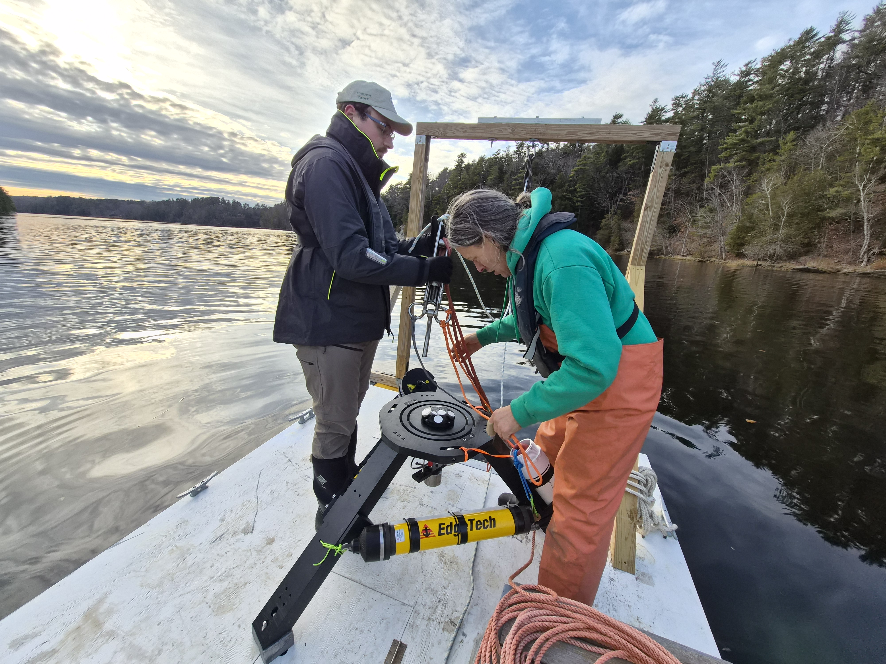
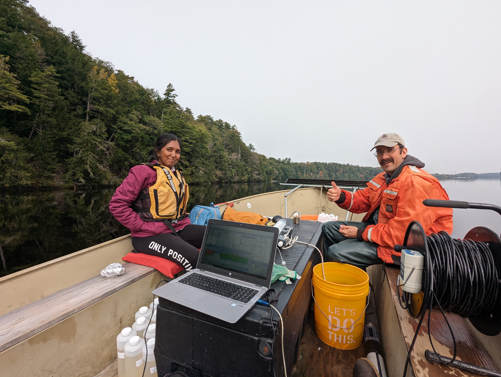
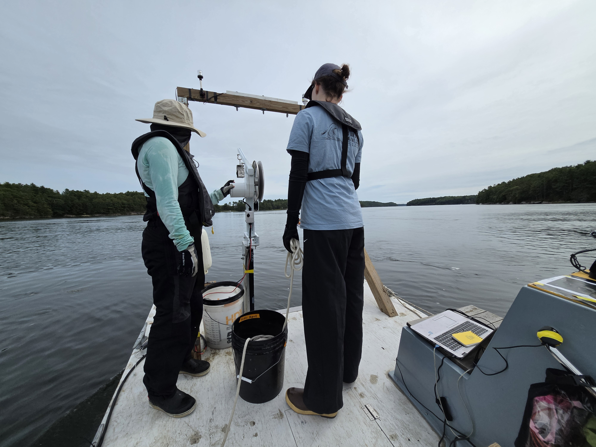
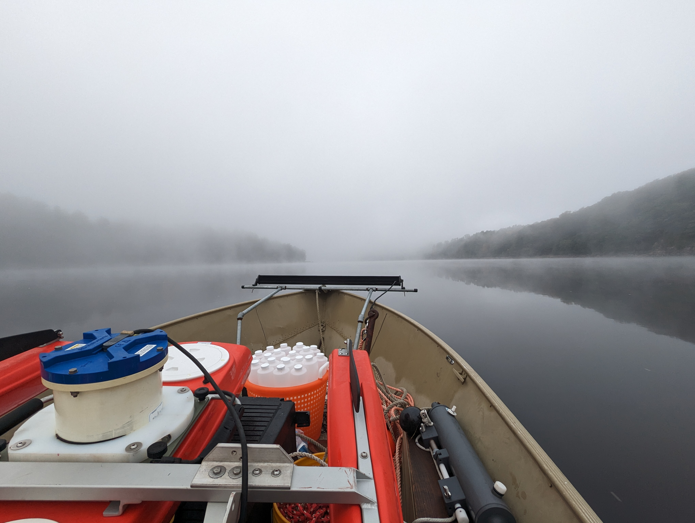
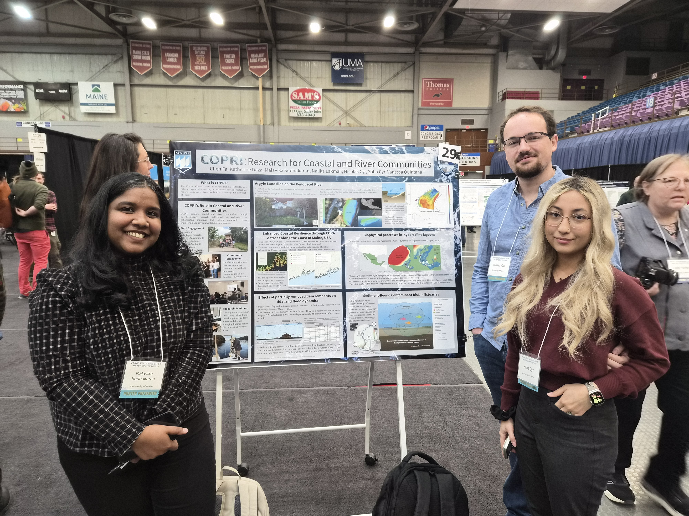

Measure currents
ADCP deployments & data processing
We deploy acoustic Doppler current profilers (ADCPs) and process the observations to investigate currents and estuarine circulation.
From individual currents to coastal systems, we investigate how water moves—and what that movement means for a changing shoreline.
Research overview: draft for lab review.
Storm surge, tides, and river flows interact to influence coastal flooding. We investigate these connections to better understand how extreme events affect estuaries and nearby communities.
The driving questionWhen do storms, tides, and rivers combine to raise water levels?
Where rivers meet the ocean, circulation and mixing shape the water’s structure. Field observations help us investigate turbulence, river plumes, and the exchange of fresh and salt water.
The driving questionHow do fresh and salt water move, mix, and exchange?
Coastal science also informs practical decisions. Our broader research interests connect hydrodynamics with living shorelines, aquaculture systems, and marine renewable energy.
The driving questionHow can understanding coastal processes inform coastal decisions?
Research in practice
Our research connects field measurements, sample analysis, and shared learning. Here is how we collect observations and bring coastal science into conversation.

Measure currents
We deploy acoustic Doppler current profilers (ADCPs) and process the observations to investigate currents and estuarine circulation.

Across the estuary
Boat-based transects let us observe how conditions vary across an estuary. Transecting complements our instrument deployments and connects measurements from different parts of the system.

Through the water column
Our field activities include microCTD casts and Eureka probe casting. These observations complement current measurements as we study conditions through the water column.

From field to lab
We collect water samples containing suspended sediment using Niskin bottles, process sediment samples in the lab for organic and inorganic components, and carry out PFAS sampling.

Exchange methods
We facilitate workshops that bring people together to discuss coastal research, exchange methods, and learn from one another.

Share the science
Conference participation and travel connect our work with the wider research community. Through presentations, discussion, and involvement in the Physics of Estuaries and Coastal Seas (PECS) conference, we share findings and build collaborations.
The approach
Field measurements provide a close look at coastal processes. Working across disciplines helps connect those observations to questions facing coastal communities.
The research themes above draw on Dr. Huguenard’s University of Maine research profile. The activities highlight our work in the field, in the lab, and with the research community.